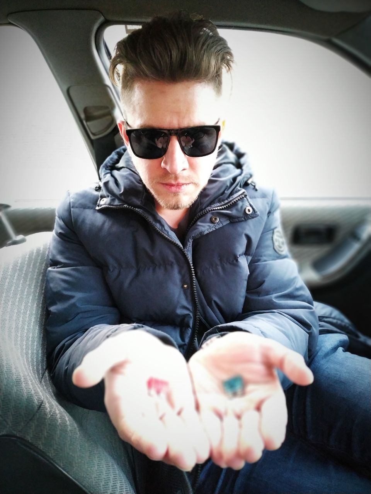

+380674833854
dm.adamovsky@gmail.com

|  |
+380674833854dm.adamovsky@gmail.com
|
EDUCATION |
||
| 1999 | Odessa's School #35 | |
| 1999-2004 | Odessa National Polytechnic University | Energetic institute |
| 2006 | Odessa National Polytechnic University | 1C 7.7 development |
EXPERIENCE |
||
| 2004 – 2006 | Kotlomontazh LLC | Foreman |
| 2007 – 2008 | Gosenergonadzor PES | Government controller |
| 2010 – 2016 | Heat supply of Odessa CE | Operator |
| 2007 – p.t. | Various Odessa mass media | Journalist, editor, video operator |